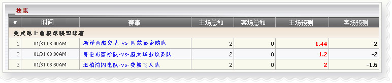

独赢
定义:
查看代理赢输根据占成注单已投注种类于独赢:
独赢

独赢
用词注解:
- 主场总和: 代理总收入金额由会员金额根据占成，如果主队选择投注.
- 客场总和: 代理总收入金额由会员金额根据占成，如果客队选择投注.
- 主场预测: 代理的数量可能会输，如果会员赢得选择投注(主队)
- 客场预测: 代理的数量可能会输，如果会员赢得选择投注(客队).
在上图中, 我们有以下投注详情信息:
- 第一注单: 金额=10, 赔率=0.72, 选择= 主队( 新泽西魔鬼队),代理占成= 20%
--> 主场总和= 金额*代理占成=10*20% = 2
--> 客场总和= 0
--> 主场预测 =金额*赔率*代理占成 = 10 * 0.72* 20% = 1.44
--> 客场预测= 金额* 代理占成= 10* 20% = 2
- 第二注单: 金额=10, 赔率=0.6, 选择= 主队( 哥伦布蓝衫队),代理占成= 20%
--> 主场总和= 金额*代理占成=10*20% = 2
--> 客场总和= 0
--> 主场预测 =金额*赔率*代理占成 = 10 * 0.6* 20% = 1.2
--> 客场预测= 金额* 代理占成= 10* 20% = 2
- 第三注单: 金额=10, 赔率=0.8, 选择= 主队( 哥伦布蓝衫队),代理占成= 20%
--> 主场总和= 金额*代理占成=10*20% = 2
--> 客场总和= 0
--> 主场预测=金额*赔率*代理占成 = 10 * 1*20% = 2
--> 客场预测= 金额* 代理占成= 10*0.8* 20% = 1.6
注意: